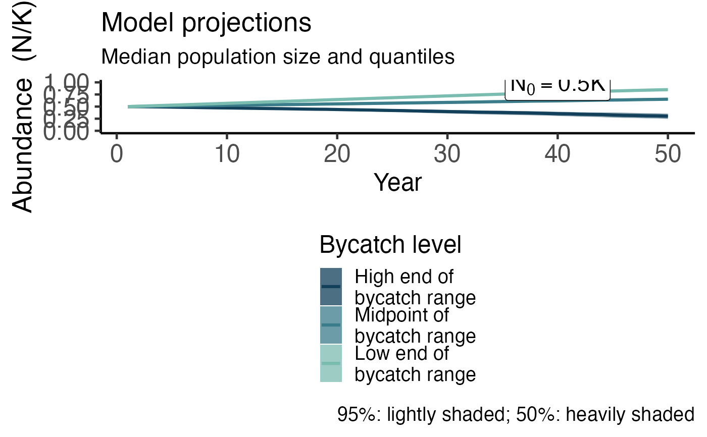

plot_proj.Rdplots outputs from several projections that result from a Projections() call.
plot_proj( high, med, low, years.plot = 50, ylims, spaghetti = FALSE, K1plus = 9000, InitDepl = 0.8, color.palette = c("#7bbcb0", "#3a7c89", "#123f5a"), lang = "en" )
| high | a list containing output from |
|---|---|
| med | a list containing output from |
| low | a list containing output from |
| years.plot | number of years to plot on the x axis |
| ylims | y-limits of projection plot |
| spaghetti | either FALSE or a number, where the number is how many simulations to show from the same scenario |
| K1plus | carrying capacity in terms of age 1+ individuals |
| InitDepl | initial depletion level (1+ population size relative to K). Must be between 0 and 1. |
| color.palette | a vector of three colors to use for low, medium and high bycatch rates |
| lang | language selected by the user (character) |
A plot of 50 percent and 90 percent confidence intervals of population projections (if spaghetti == FALSE) or a spaghetti plot (if is.numeric(spaghetti)), from Projections().
parms <- list( S0 = 0.944, S1plus = 0.99, K1plus = 9000, AgeMat = 18, nages = 20, z = 2.39, lambdaMax = 1.02 ) initdepl <- 0.5 high.simple <- projections( NOut = 50, ConstantBycatch = list( Catch = 100, CV = 0.3 ), InitDepl = initdepl, lh.params = parms, nyears = 100 ) med.simple <- projections( NOut = 50, ConstantBycatch = list( Catch = 50, CV = 0.3 ), InitDepl = initdepl, lh.params = parms, nyears = 100 ) low.simple <- projections( NOut = 50, ConstantBycatch = list( Catch = 10, CV = 0.3 ), InitDepl = initdepl, lh.params = parms, nyears = 100 ) x <- plot_proj( high = high.simple, med = med.simple, low = low.simple, years.plot = 50, ylims = c(0, parms$K1plus), InitDepl = initdepl, K1plus = parms$K1plus ) x